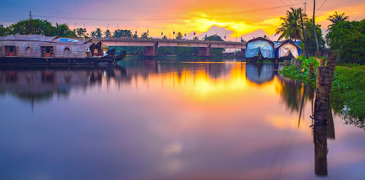

Krishnapuram Palace
Built during the reign of Travancore king Marthanda Varma, Krishnapuram Palace is a two-story structure crafted in traditional Kerala architectural style.

Kuttanad
Kuttanad is a region covering a large part of Alappuzha and some of Kottayam district, the heart of the backwaters of Kerala. Kuttanad is the 'rice bowl of Kerala', being home to lush green rice fields spread extensively, divided by dykes. Travelling through this secluded alcove of nature will give you a feel of traditional countryside life of Kerala. A special peculiarity of this place is its geography. It lies around 2 metres below the main sea level, making it the lowest altitude place in the country.